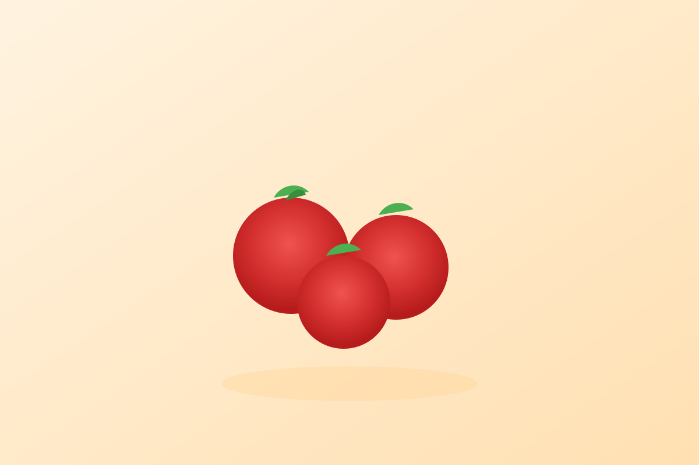

Tomato
Quick answer
Tomatoes fit well into an anti-inflammatory eating pattern because they are versatile, practical, and easy to use often. Their value comes from helping build repeatable whole-food meals rather than from any single dramatic claim.
What it is
Tomatoes are commonly used fresh, roasted, stewed, or blended into sauces. They work well in both raw and cooked dishes, which makes them one of the easiest vegetables to use regularly.
Why tomato may support an anti-inflammatory diet
Tomatoes are often discussed because of lycopene along with their role in vegetable-rich cooking. In practice, they are useful because they fit into many meals without adding complexity.
This page keeps the framing food-based and routine-focused rather than medical.
Key nutrients and compounds
- Vitamin C
- Potassium
- Fiber
- Lycopene
Potential health benefits
- Supports more vegetable-forward meals
- Works well in fresh and cooked recipes
- Pairs easily with olive oil, greens, and legumes
How to eat tomato
- Add sliced tomatoes to salads and grain bowls
- Cook tomatoes into soups or simple sauces
- Roast tomatoes with olive oil and herbs
Shopping and storage
Choose tomatoes that suit how you cook, whether that means cherry tomatoes for salads or larger tomatoes for sauces. Store them based on ripeness and use them before texture declines.
FAQ
Is tomato anti-inflammatory?
Tomatoes are commonly included in anti-inflammatory food patterns because they are practical, lycopene-associated foods that support vegetable-rich meals.
Are cooked tomatoes still a good option?
Yes. Cooked tomatoes can still fit very well, especially in soups, sauces, and slow-cooked savory dishes.
What is the easiest way to use tomatoes more often?
Keep them in repeatable meals such as salads, egg dishes, roasted vegetable trays, and simple pasta or bean-based dinners.
Evidence note
Tomatoes are described here as a supportive food within a broader eating pattern, not as a treatment by themselves.
The strongest factual framing on this page is limited to established nutrition context such as vitamin C, potassium, fiber, and lycopene-related compounds. The page does not claim that eating tomatoes guarantees a specific health outcome.